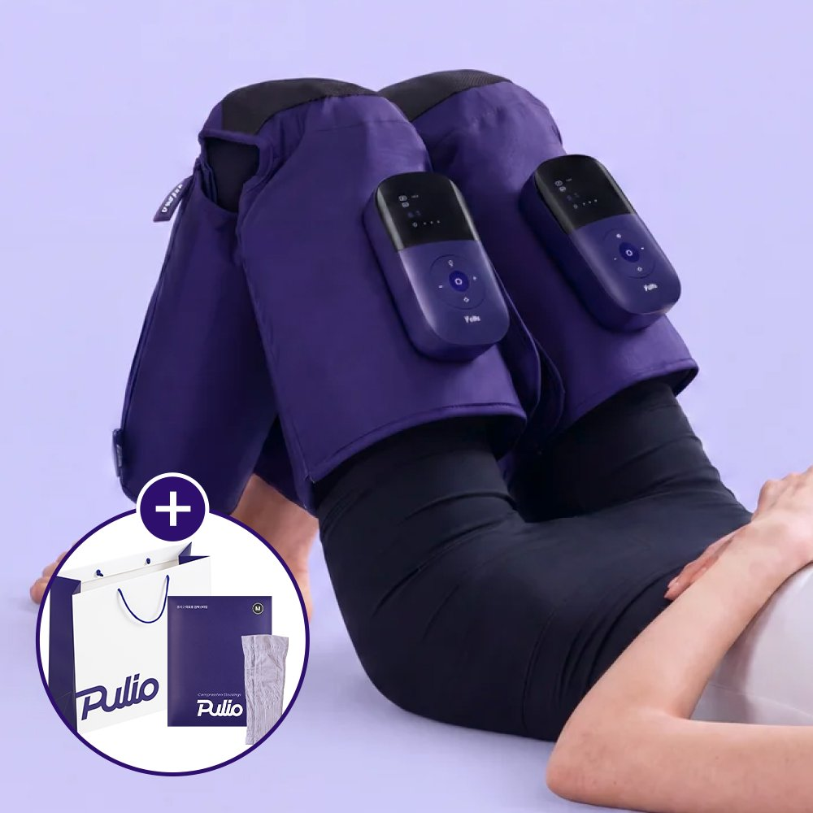
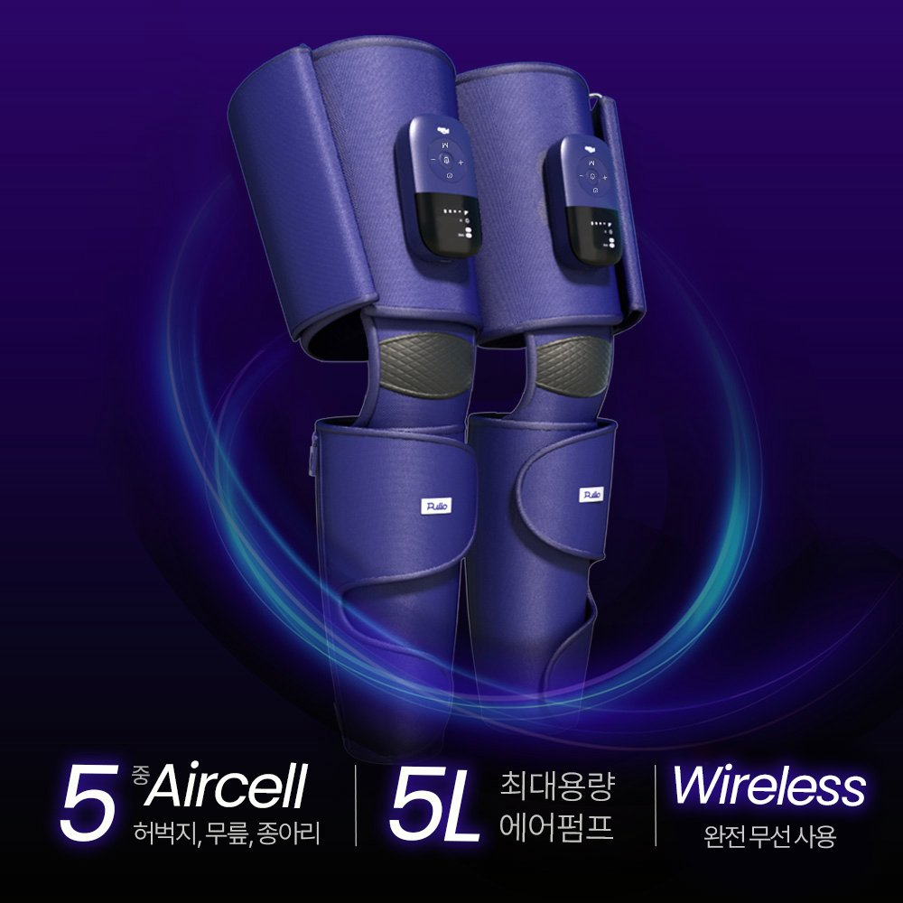
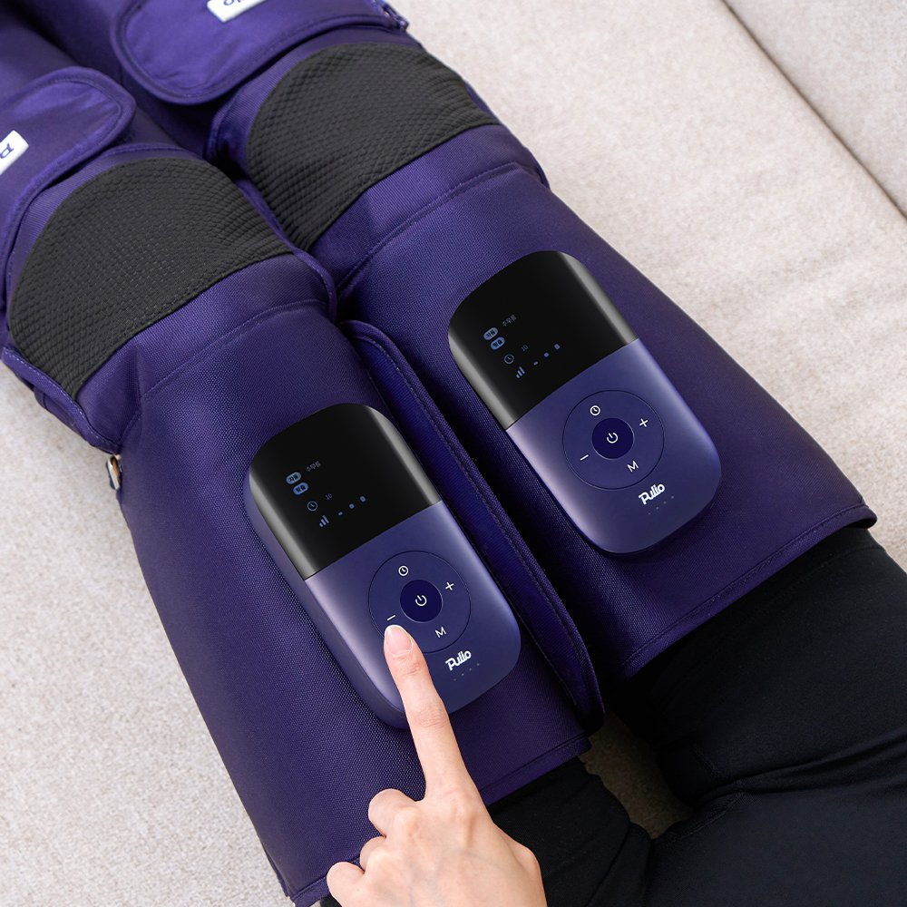
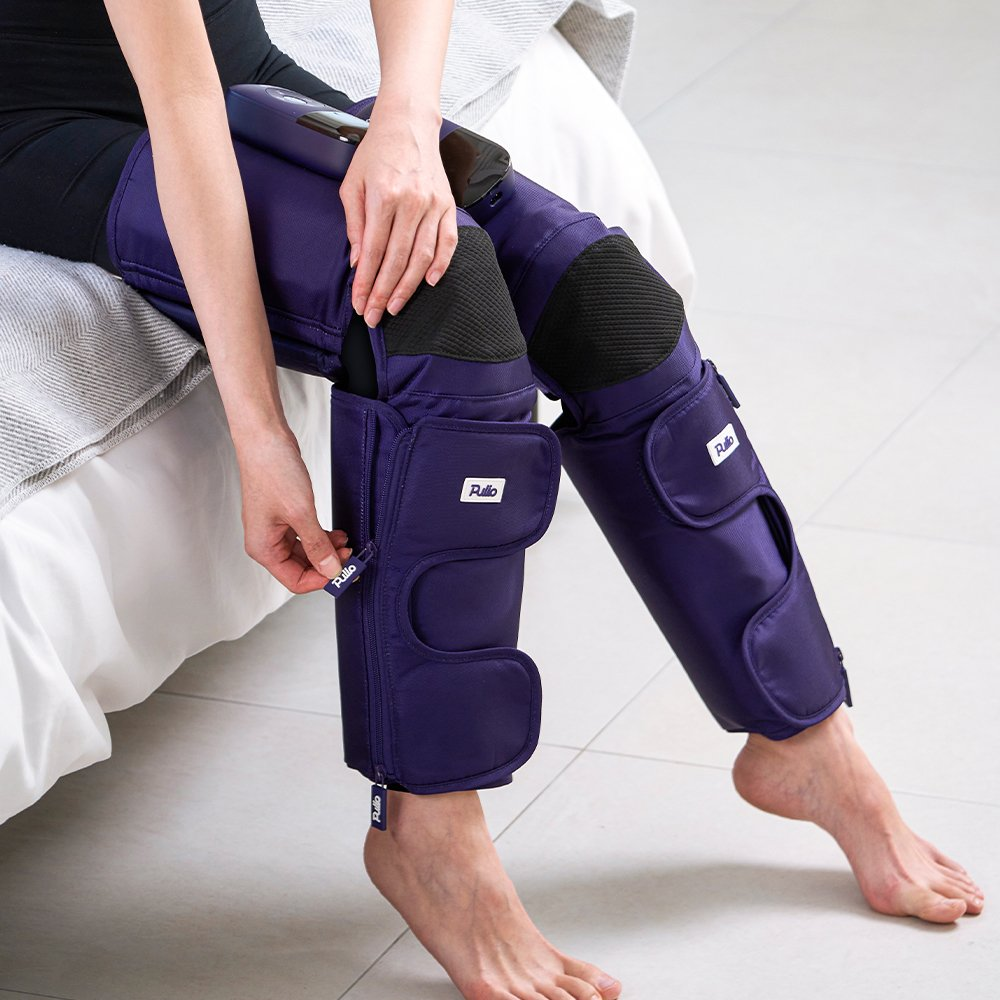

Pulio Wireless Leg Air Massager Review at a Glance
This Pulio Wireless Leg Air Massager review looks at a Korean gadget built for heavy, tired legs after long days of standing, sitting or flying. Pulio (풀리오) makes cordless massagers, and this one wraps each leg from thigh to calf with five air cells that squeeze and release in waves, with no hoses and no wall pump.
In Korea it's sold as a gift set with compression stockings. Here's what it does well, where it falls short and who it suits.

Design: Five Air Cells, No Hoses
Each purple wrap has its own control unit and pump on the thigh, so the two legs work independently. The five cells run from the upper thigh over the knee area down to the calf, and Velcro straps adjust the fit. Because the pump is on the wrap, you can get up and walk to the kitchen without unplugging anything.


Key Specs
| Item | Details |
|---|---|
| Brand | Pulio (풀리오), Korea |
| Type | Wireless thigh-to-calf air-compression massager (pair) |
| Air cells | 5 per leg (thigh, knee area, calf) |
| Pump | 5L air pump built into each wrap |
| Modes / pressure | 6 modes · 5 pressure levels · smart memory of last setting |
| Charging | USB-C, 5V/2A, about 3–4 hours |
| Runtime | Up to about 150 minutes (brand figure) |
| Weight | About 810g |
| Made in | China (Korean brand), KC certified |
| Warranty (Korea) | 365-day A/S |
| Korean price | About ₩219,000 (official store, November 2026) |
Sources: Pulio's Korean product listing and official store. Battery figures vary between listings, so we only quote the brand's charging time and runtime.
Modes, Pressure and Daily Use
Press the button on each control unit to start and step through modes and pressure levels on the small display. The squeeze builds from calf to thigh and then releases, like a firm hand massage. Start on level 1–2: higher levels feel very tight on slim legs. A 15–20 minute session in the evening is plenty for most people.


Photo note: These are the 5 real product photos from the Korean listing. We didn't add any AI-generated images.
Wireless vs. Corded Leg Massagers
| Pulio Wireless Leg Massager | Corded Leg Massager (e.g. Dr.Well DR-5180) | Manual Massage / Foam Roller | |
|---|---|---|---|
| Power | Built-in battery, USB-C | Wall plug + hoses | None |
| Coverage | Thigh, knee area, calf | Usually foot to thigh | Wherever you roll |
| Move while using | Yes | No | N/A |
| Feet | Not covered | Usually covered | Yes |
| Best for | Couch, desk and travel recovery | Long home sessions | Budget, active recovery |
Pros & Cons
✅ Pros
- Truly wireless: no hoses or wall pump.
- Five cells cover thigh to calf, with 6 modes and 5 levels.
- USB-C charging and smart memory are convenient.
- Gift set includes compression stockings.
⚠️ Cons
- Doesn't cover the feet.
- Runtime drops at high pressure.
- Not on US Amazon, and Korean pricing isn't cheap.
- Not a medical device; some conditions rule it out.
Who It Suits (and Who Should Skip It)
- Great for: People who stand or sit all day and get heavy, swollen-feeling legs by evening.
- Great for: Travelers who want to relax their legs after long flights or walking days.
- Great for: Anyone who disliked hose-and-pump massagers.
- Maybe skip: If you mainly want foot massage, or you have circulation conditions (ask a doctor first).
Pulio Leg Massager FAQ
What is the Pulio Wireless Leg Air Massager?
It's a cordless air-compression leg massager from Korean brand Pulio (풀리오). Each wrap uses five air cells covering the thigh, knee area and calf, driven by a 5L pump, with 6 modes and 5 pressure levels.
How long does the battery last?
It charges over USB-C (5V/2A) in about 3–4 hours, and the brand quotes up to around 150 minutes of use per charge, depending on mode and pressure.
How is it different from corded leg massagers like the Dr.Well Airwave?
Corded units like the Dr.Well DR-5180 run from a wall pump with hoses and usually cover the foot too. The Pulio puts the pump on each wrap, so there are no hoses and you can walk around, but it doesn't cover the feet.
Can I buy it in the US?
It's sold in Korea and isn't listed on US Amazon, so we link to similar wireless leg air-compression massagers on Amazon instead. Korean units are made for Korea, so check plug and charger compatibility.
Who shouldn't use it?
Skip it or ask a doctor first if you have deep vein thrombosis, varicose vein problems, recent surgery, diabetes-related nerve issues, a pacemaker or you're pregnant. It's a comfort device, not a medical treatment.
Similar Wireless Leg Air Massagers
Pulio isn't on US Amazon, so here are similar cordless thigh-to-calf air-compression massagers.